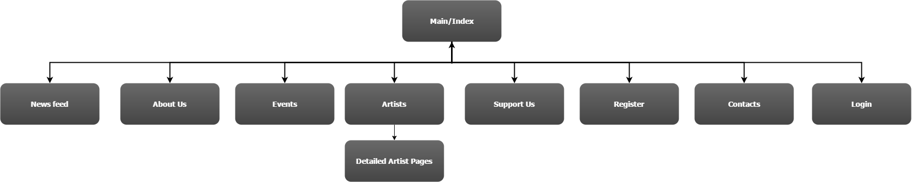

Project Plan
Great Barrier Reef Orchestra - Website Plan
<Nicholas Harding - JC427914>
<Luke Maclean - JC13501656>
<Nickolas Jucker - JC468021>
<Stephen Ohl- JC13499198>
Mission Statement
The Great Barrier Reef Orchestra website's purpose is to increase ticket sales by 30%. As well as boost artists, supporters and sponsors by 10% while
informing and attracting potential artists and members especially younger members of the Townsville-based Orchestra.
In addition, the site is planned to maintain and inform existing members of upcoming rehearsals, concerts, as well as new members.
Success Evaluation
Due to lack of the client giving a quantifiable number it has been decided that a 30% increase in ticket sales would be reasonable.
Another factor that decides it's success is if artists, supporters, sponsors increase by 10%.
Target Audience
The Great Barrier Reef Orchestra wish to grab the attention of mostly a younger demographic, especially high school students but also any orchestra enthusiasts no matter the gender or age. To achieve this the website will use a simplistic yet professional design to make it appealing to younger audiences as they are better accustomed to higher standards in websites.The website will be made so its text is scannable as this demographic are more likely to stay on the website due to it being less of a chore to read, since younger audiences will have lower attention spans. The site will incorporate nice radiant colors like the orange to portray coral, blues for the ocean and an off color white so that not everything else is white.
Color template.
Content
- 'Index' shall house a short intro about the orchestra, recent newsfeed which will link off to a more in-depth page for that article, upcoming events with a timer, rotation of images showing off the venue and a call to action to join as either as member or sponsor.
- 'News Feed' will host reviews about concerts and information about special events.
- 'Events'' will show upcoming and previous concerts and its repertoire.
- 'Support us'' shows all the people or organizations that help sponsor the venue, information about what it is to be a sponsor and how to go about becoming one or just to donate.
- 'Contacts' will hold all information to get in touch with the company and to send a message through the site itself.
- The 'Register' page will hold information about being a member and a how to fill out the membership form and where to submit.
- 'Artists'' will display guest conductors, life members, committee and guest artists, some will have small portraits with bios while others are just text information. Life members, conductors and guest artists will be clickable and redirect you to a full bio and large picture of them.
- 'Login' page will just be a login form that takes users email and password or redirects them to registration to make an account.
- On each page there will be a tail/footer with their copyright statement, two link for contacts and a redirect to their facebook page.
Site Flowchart (Structure Diagram)

GitHub Repository
Repo name: m1
URL: https://github.com/NicholasHardingJCU/m1